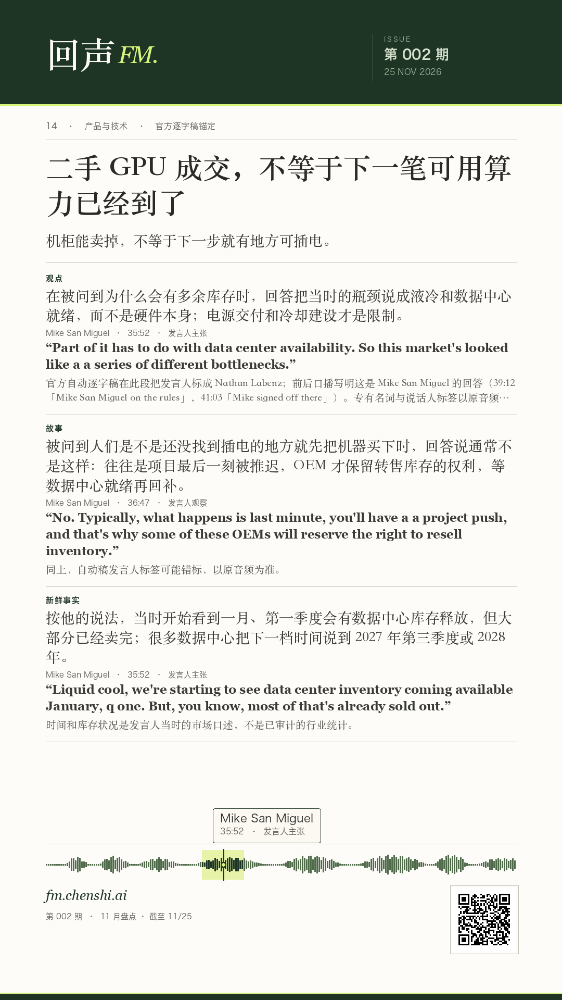

14第 002 期产品与技术11.08官方逐字稿锚定
二手 GPU 成交，不等于下一笔可用算力已经到了
机柜能卖掉，不等于下一步就有地方可插电。
观点
在被问到为什么会有多余库存时，回答把当时的瓶颈说成液冷和数据中心就绪，而不是硬件本身；电源交付和冷却建设才是限制。
“Part of it has to do with data center availability. So this market's looked like a a series of different bottlenecks. Right now, it's liquid cooled and data center, readiness. ... that has to do with constraints, not on the actual hardware side, but on the data center's power delivery.”
官方自动逐字稿在此段把发言人标成 Nathan Labenz；前后口播写明这是 Mike San Miguel 的回答（39:12「Mike San Miguel on the rules」，41:03「Mike signed off there」）。专有名词与说话人标签以原音频为准。
故事
被问到人们是不是还没找到插电的地方就先把机器买下时，回答说通常不是这样：往往是项目最后一刻被推迟，OEM 才保留转售库存的权利，等数据中心就绪再回补。
“No. Typically, what happens is last minute, you'll have a a project push, and that's why some of these OEMs will reserve the right to resell inventory. If, let's say, one of their hyperscalers sites isn't ready, they'll be able to sell that inventory and then backfill it when that that data center gets to be ready.”
同上，自动稿发言人标签可能错标，以原音频为准。
新鲜事实
按他的说法，当时开始看到一月、第一季度会有数据中心库存释放，但大部分已经卖完；很多数据中心把下一档时间说到 2027 年第三季度或 2028 年。
“Liquid cool, we're starting to see data center inventory coming available January, q one. But, you know, most of that's already sold out. There's a lot of data centers that are now telling us it's q three twenty twenty seven or 2028.”
时间和库存状况是发言人当时的市场口述，不是已审计的行业统计。
他还谈到 KYC：不少 OEM 未完成审查不会报价甚至不会发货；并提到对中国实体持股比例的限制（他回忆通常是 50% 或以上，也可能降到 49%）。
“A lot of the OEMs will not even quote without KYC being done. Some will not ship without it being done. ... There are limits on, you know, what percentage can be owned by China. ... Yeah. Like, I think they might be going down to 49%. I know typically 50% or more.”
持股比例是发言人回忆中的规则口径，不是对现行法规的核对。自动稿发言人标签同上处理。
人物与产品
Mike San Miguel 来自 Luxor Technology，节目介绍他在硬件台上卖 GPU 服务器，并搭建了 KYC 部门。
“He sells GPU servers off its hardware desk, and he set up its KYC department.”
这是主持人口播介绍，不是公司文件。
节目溯源
The Cognitive Revolution · Mike San Miguel
本期
第 002 期 · 25 NOV 2026 · 11 月盘点 · 截至 11/25
